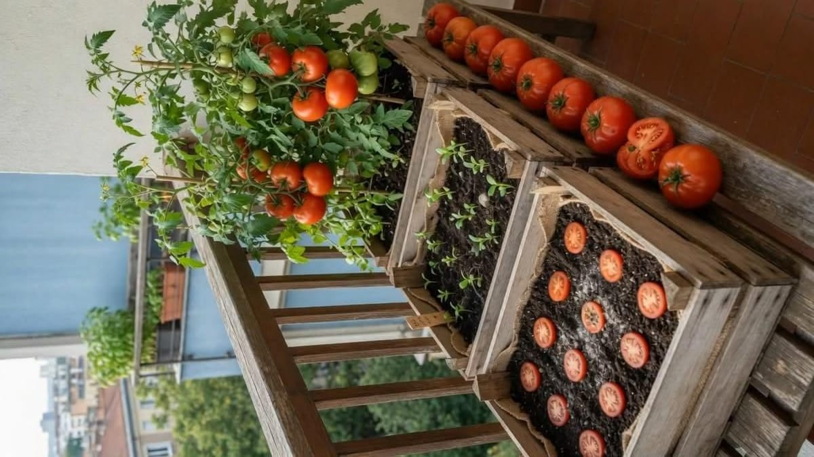

Planea tu huerto urbano
Antes de comenzar un huerto urbano es importante organizar correctamente el espacio, los cultivos y los materiales que se utilizarán. Una buena planeación ayuda a mejorar el crecimiento de las plantas y evita problemas como exceso de agua, falta de luz o mal desarrollo de las raíces.
Buscador de cultivos
Escribe el nombre de una fruta, verdura o planta para conocer sus cuidados, temporada ideal, tipo de riego y recomendaciones.
1. Selección del espacio

El espacio es uno de los factores más importantes en un huerto urbano. Puede utilizarse un balcón, patio, azotea o incluso una ventana con buena iluminación.
Características recomendadas:
- Buena entrada de luz solar
- Ventilación natural
- Acceso sencillo al agua
- Espacio suficiente para las macetas
2. Recipientes y macetas
Los recipientes ayudan al correcto crecimiento de las raíces. Deben contar con agujeros de drenaje para evitar acumulación de agua.
Ejemplos de recipientes:
- Macetas de barro
- Cubetas recicladas
- Botellas de plástico
- Cajas de madera
- Huertos verticales
3. Sustrato y tierra
El sustrato es la mezcla donde crecerán las plantas. Debe contener nutrientes, retener humedad y permitir circulación de aire.
- Tierra negra
- Aporta nutrientes y retiene humedad.
- Fibra de coco
- Ayuda al drenaje y mantiene humedad equilibrada.
- Compost
- Abono natural rico en nutrientes.
4. Riego y mantenimiento
El riego debe adaptarse al tipo de planta y clima. Un exceso de agua puede provocar hongos y pudrición.
| Estación | Frecuencia de riego |
|---|---|
| Primavera | Cada 1 o 2 días |
| Verano | Diario |
| Otoño | 3 veces por semana |
| Invierno | 1 o 2 veces por semana |